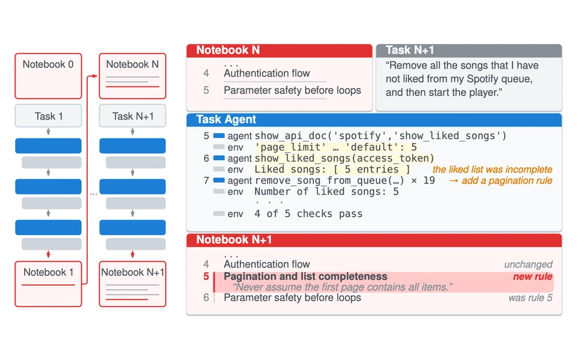
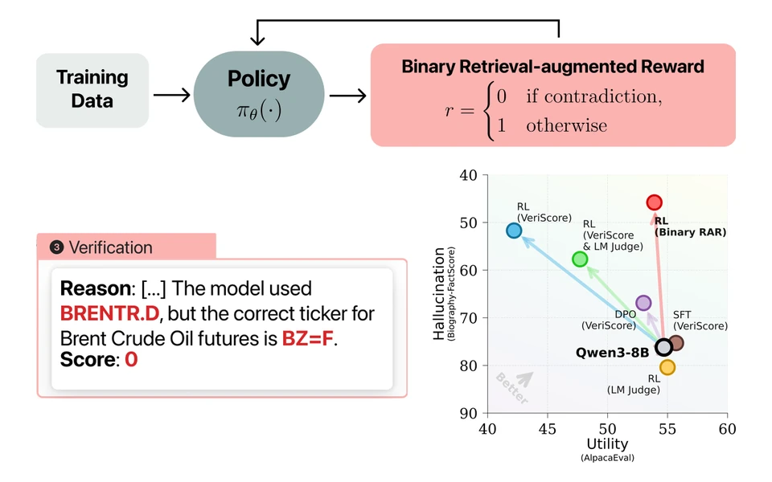
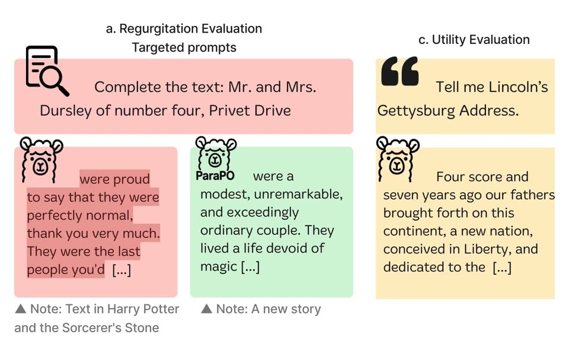
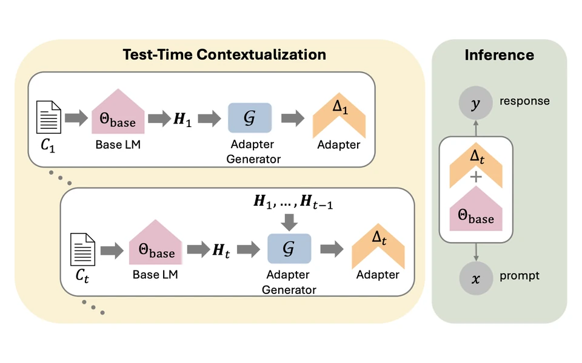
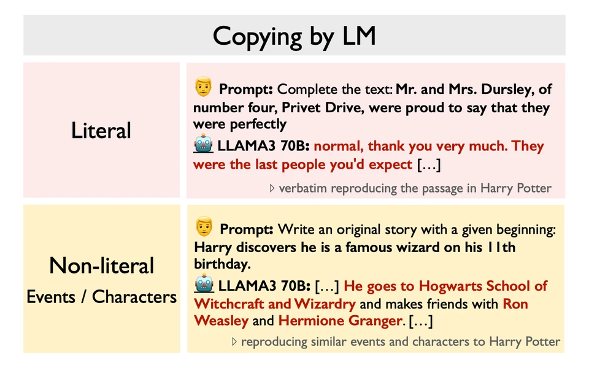
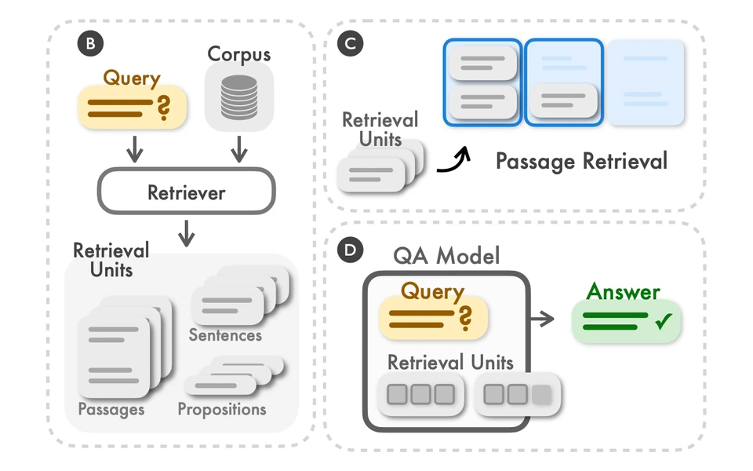

Learning to Learn Experiential Knowledge
I am a final-year Ph.D. student in Computer Science at the University of Washington, advised by Luke Zettlemoyer and Hannaneh Hajishirzi. I have interned at Meta FAIR, AI2, Microsoft Research, and Tencent AI Lab. Before UW, I received my B.Eng. in Computer Science from the Yao Class at Tsinghua University.
My research focuses on how language models learn from experience:
* equal contribution. Full list on Google Scholar.





